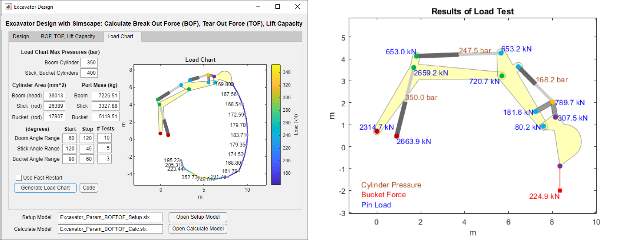
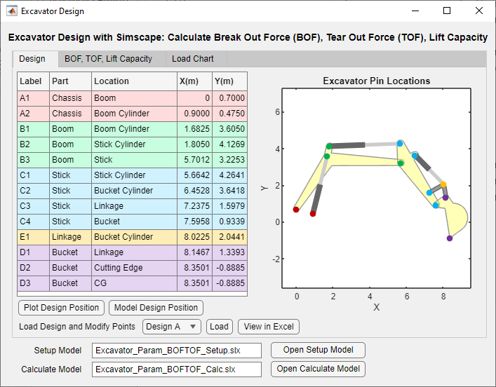
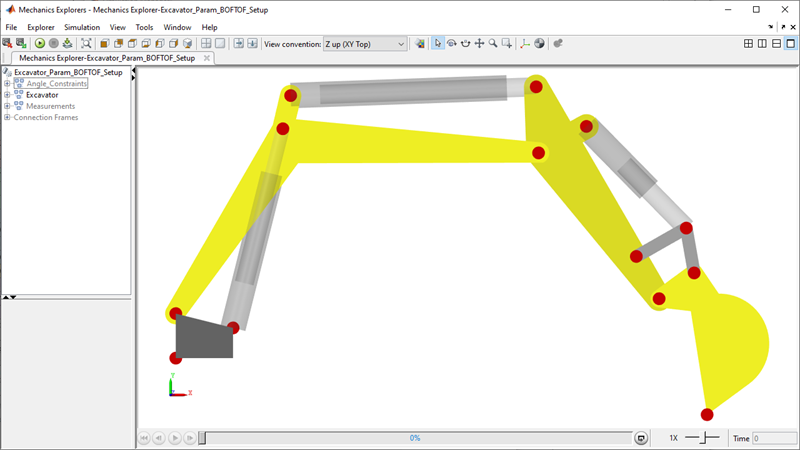
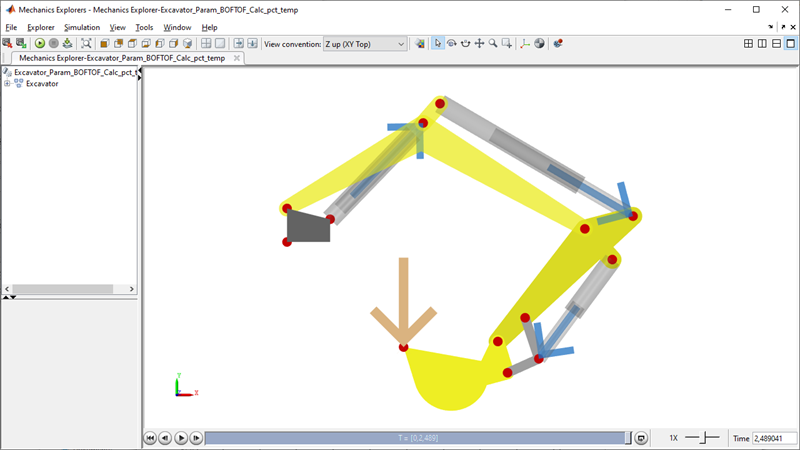
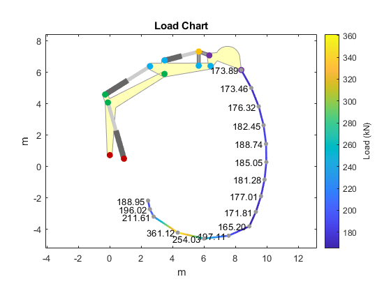
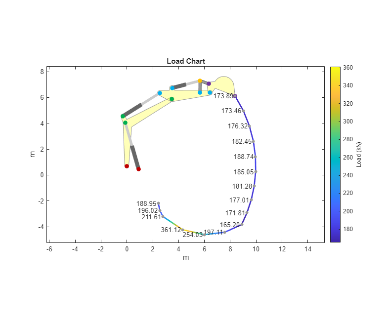
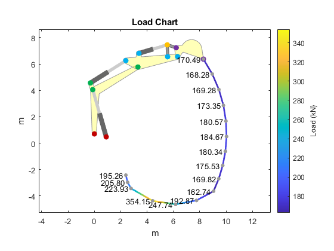
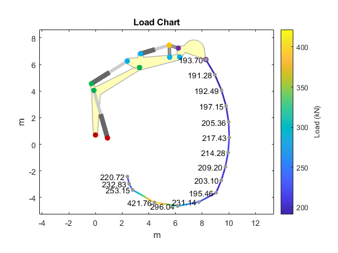

Excavator Design with Simscape™: Load Chart Calculation

(return to Excavator Design Overview)
This app enables you to create a load chart for a given excavator design. The load chart calculation is performed using a minimal set of parameters to enable design space exploration.
You use the app to specify:
- Pin locations
- Maximum hydraulic relief pressures
- Cylinder areas
- Boom, stick, and bucket masses
- Excavator arm angles for test points
The app will assign these values to a parameterized excavator model created using Simscape Multibody. It will then run a set of simulations to determine the lift capacity at each of those points, including the effects of gravity. The resulting plot will be shown in the app.
Open App for Calculating BOF, TOF, and Load Capacity
Contents
Excavator Design App: Define Pin Locations
On the "Design" tab you specify the pin locations in the design position.
- Edit the pin locations in the table.
- Press the "Plot Design Position" button to draw the excavator.
- Press the "Model Design Position" button to display the model. This loads the pin locations into the MATLAB workspace.
Pre-saved sets of pin locations can be loaded from Excel.


Excavator Design App: Create Load Chart
On the "Load Chart" tab you configure the load chart sweep.
- Define maximum pressures for the actuators
- Define cylinder cross-sectional areas.
- Define the mass for the boom, stick, and bucket
- Define the excavator arm angles for test points.
- --- See the BOF, TOF tab for a diagram explaining the angles
- --- The stick and bucket angles will be held at their initial position while the boom angle is swept from start to stop
- --- Next, the stick angle will be swept as the boom angle is held at the stop angle and the bucket angle is held at the start angle.
- --- Finally, the bucket angle will be swept as the boom angle and stick angle are held at their respective stop angles
- Set the "Use Fast Restart" checkbox for a faster sweep (excavator visualization will not be shown) or leave it blank to see each excavator position.
- Press "Generate Load Chart" button

The final configuration of the excavator will be visualized. The arrows in the windo show the load force applied and the forces in each cylinder. This image shows an example of the Load Chart test. During the test,
- Gravity is turned on
- The cylinders are locked in the specified test position
- The load is increased until one of the cylinders reaches the limit specified in the app.

Load Chart Test, Design A
Generating the load chart can be automated using MATLAB commands. The MATLAB code below creates a load chart for Design A.
mdl_LoadChart_setup = 'Excavator_Param_BOFTOF_Setup'; mdl_LoadChart_calc = 'Excavator_Param_BOFTOF_Calc'; MPdata = readtable('Excavator_Pin_Locations_global.xlsx','Sheet','Design A','Range','B2:F15','VariableNamingRule','preserve'); ExcvGlobal = Excavator_Pin_Locations_table2struct(MPdata); ExcvLocal = Excavator_Pin_Locations_global2local(ExcvGlobal); forceTestMaxActiveCylPr = 350; % bar, Max pressure boom cylinder forceTestMaxReactiveCylPr = 400; % bar, Max pressure stick and bucket cylinders BOFTOF_BoomCylArea = 38013; % mm^2, Area boom cylinder, head end BOFTOF_StickCylArea = 26389; % mm^2, Area stick cylinder, rod end BOFTOF_BucketCylArea = 17907; % mm^3, Area bucket cylinder, rod end LoadChart_BoomMass = 7226.51; % kg, Mass boom arm LoadChart_StickMass = 3327.88; % kg, Mass stick arm LoadChart_BucketMass = 5119.51; % kg, Mass bucket qBoomSet = linspace(60,120,10); % deg qStickSet = linspace(120,45,5); % deg qBucketSet = linspace(90,60,3); % deg Excavator_LoadChart_Create(qBoomSet,qStickSet,qBucketSet,... mdl_LoadChart_setup,mdl_LoadChart_calc,true);
[18-Feb-2026 00:11:15] Running simulations... [18-Feb-2026 00:11:18] Completed 1 of 16 simulation runs [18-Feb-2026 00:11:20] Completed 2 of 16 simulation runs [18-Feb-2026 00:11:22] Completed 3 of 16 simulation runs [18-Feb-2026 00:11:24] Completed 4 of 16 simulation runs [18-Feb-2026 00:11:26] Completed 5 of 16 simulation runs [18-Feb-2026 00:11:28] Completed 6 of 16 simulation runs [18-Feb-2026 00:11:30] Completed 7 of 16 simulation runs [18-Feb-2026 00:11:32] Completed 8 of 16 simulation runs [18-Feb-2026 00:11:34] Completed 9 of 16 simulation runs [18-Feb-2026 00:11:36] Completed 10 of 16 simulation runs [18-Feb-2026 00:11:38] Completed 11 of 16 simulation runs [18-Feb-2026 00:11:40] Completed 12 of 16 simulation runs [18-Feb-2026 00:11:42] Completed 13 of 16 simulation runs [18-Feb-2026 00:11:45] Completed 14 of 16 simulation runs [18-Feb-2026 00:11:47] Completed 15 of 16 simulation runs [18-Feb-2026 00:11:49] Completed 16 of 16 simulation runs [18-Feb-2026 00:11:50] Running simulations... [18-Feb-2026 00:11:54] Completed 1 of 16 simulation runs [18-Feb-2026 00:11:56] Completed 2 of 16 simulation runs [18-Feb-2026 00:11:58] Completed 3 of 16 simulation runs [18-Feb-2026 00:12:00] Completed 4 of 16 simulation runs [18-Feb-2026 00:12:02] Completed 5 of 16 simulation runs [18-Feb-2026 00:12:04] Completed 6 of 16 simulation runs [18-Feb-2026 00:12:06] Completed 7 of 16 simulation runs [18-Feb-2026 00:12:08] Completed 8 of 16 simulation runs [18-Feb-2026 00:12:11] Completed 9 of 16 simulation runs [18-Feb-2026 00:12:13] Completed 10 of 16 simulation runs [18-Feb-2026 00:12:15] Completed 11 of 16 simulation runs [18-Feb-2026 00:12:17] Completed 12 of 16 simulation runs [18-Feb-2026 00:12:19] Completed 13 of 16 simulation runs [18-Feb-2026 00:12:21] Completed 14 of 16 simulation runs [18-Feb-2026 00:12:23] Completed 15 of 16 simulation runs [18-Feb-2026 00:12:25] Completed 16 of 16 simulation runs
Load Capacity Test, Design A, Pin Loads
In this test we calculate and plot the pin loads and cylinder pressures for one of the positions of the load capacity test.
close(h1_Excavator_LoadChart_Plot)
Excavator_Test_Scenario_Select('Lift',mdl_LoadChart_setup,mdl_LoadChart_calc);
simOut = sim(mdl_LoadChart_calc);
[fLoad,test_type,pBoom,pStick,pBucket,pinForces]= Excavator_simlogToBOFTOF(simOut.logsout);
Excavator_BOFTOFLoad_plot(ExcvGlobal,fLoad,test_type,pBoom,pStick,pBucket,pinForces);
 Load Chart Test, Design B
In this test we generate the load chart using Design B
close(h1_Excavator_BOFTOFLoad_plot) MPdata = readtable('Excavator_Pin_Locations_global.xlsx','Sheet','Design B','Range','B2:F15','VariableNamingRule','preserve'); ExcvGlobal = Excavator_Pin_Locations_table2struct(MPdata); ExcvLocal = Excavator_Pin_Locations_global2local(ExcvGlobal); Excavator_LoadChart_Create(qBoomSet,qStickSet,qBucketSet,... mdl_LoadChart_setup,mdl_LoadChart_calc,true);
[18-Feb-2026 00:12:39] Running simulations... [18-Feb-2026 00:12:42] Completed 1 of 16 simulation runs [18-Feb-2026 00:12:44] Completed 2 of 16 simulation runs [18-Feb-2026 00:12:46] Completed 3 of 16 simulation runs [18-Feb-2026 00:12:48] Completed 4 of 16 simulation runs [18-Feb-2026 00:12:50] Completed 5 of 16 simulation runs [18-Feb-2026 00:12:53] Completed 6 of 16 simulation runs [18-Feb-2026 00:12:55] Completed 7 of 16 simulation runs [18-Feb-2026 00:12:57] Completed 8 of 16 simulation runs [18-Feb-2026 00:12:59] Completed 9 of 16 simulation runs [18-Feb-2026 00:13:01] Completed 10 of 16 simulation runs [18-Feb-2026 00:13:03] Completed 11 of 16 simulation runs [18-Feb-2026 00:13:05] Completed 12 of 16 simulation runs [18-Feb-2026 00:13:07] Completed 13 of 16 simulation runs [18-Feb-2026 00:13:09] Completed 14 of 16 simulation runs [18-Feb-2026 00:13:11] Completed 15 of 16 simulation runs [18-Feb-2026 00:13:13] Completed 16 of 16 simulation runs [18-Feb-2026 00:13:15] Running simulations... [18-Feb-2026 00:13:18] Completed 1 of 16 simulation runs [18-Feb-2026 00:13:20] Completed 2 of 16 simulation runs [18-Feb-2026 00:13:22] Completed 3 of 16 simulation runs [18-Feb-2026 00:13:24] Completed 4 of 16 simulation runs [18-Feb-2026 00:13:26] Completed 5 of 16 simulation runs [18-Feb-2026 00:13:28] Completed 6 of 16 simulation runs [18-Feb-2026 00:13:30] Completed 7 of 16 simulation runs [18-Feb-2026 00:13:32] Completed 8 of 16 simulation runs [18-Feb-2026 00:13:34] Completed 9 of 16 simulation runs [18-Feb-2026 00:13:36] Completed 10 of 16 simulation runs [18-Feb-2026 00:13:38] Completed 11 of 16 simulation runs [18-Feb-2026 00:13:40] Completed 12 of 16 simulation runs [18-Feb-2026 00:13:42] Completed 13 of 16 simulation runs [18-Feb-2026 00:13:44] Completed 14 of 16 simulation runs [18-Feb-2026 00:13:46] Completed 15 of 16 simulation runs [18-Feb-2026 00:13:48] Completed 16 of 16 simulation runs
Load Chart Test, Design B, Higher Pressure Settings
In this test we increase the pressure settings to see the effect on the load chart.
forceTestMaxActiveCylPr = 400; % bar, Max pressure boom cylinder forceTestMaxReactiveCylPr = 450; % bar, Max pressure stick and bucket cylinders close(h1_Excavator_LoadChart_Plot) Excavator_LoadChart_Create(qBoomSet,qStickSet,qBucketSet,... mdl_LoadChart_setup,mdl_LoadChart_calc,true);
[18-Feb-2026 00:13:55] Running simulations... [18-Feb-2026 00:13:58] Completed 1 of 16 simulation runs [18-Feb-2026 00:14:00] Completed 2 of 16 simulation runs [18-Feb-2026 00:14:02] Completed 3 of 16 simulation runs [18-Feb-2026 00:14:04] Completed 4 of 16 simulation runs [18-Feb-2026 00:14:06] Completed 5 of 16 simulation runs [18-Feb-2026 00:14:08] Completed 6 of 16 simulation runs [18-Feb-2026 00:14:10] Completed 7 of 16 simulation runs [18-Feb-2026 00:14:12] Completed 8 of 16 simulation runs [18-Feb-2026 00:14:14] Completed 9 of 16 simulation runs [18-Feb-2026 00:14:16] Completed 10 of 16 simulation runs [18-Feb-2026 00:14:18] Completed 11 of 16 simulation runs [18-Feb-2026 00:14:20] Completed 12 of 16 simulation runs [18-Feb-2026 00:14:22] Completed 13 of 16 simulation runs [18-Feb-2026 00:14:24] Completed 14 of 16 simulation runs [18-Feb-2026 00:14:26] Completed 15 of 16 simulation runs [18-Feb-2026 00:14:28] Completed 16 of 16 simulation runs [18-Feb-2026 00:14:31] Running simulations... [18-Feb-2026 00:14:34] Completed 1 of 16 simulation runs [18-Feb-2026 00:14:36] Completed 2 of 16 simulation runs [18-Feb-2026 00:14:38] Completed 3 of 16 simulation runs [18-Feb-2026 00:14:40] Completed 4 of 16 simulation runs [18-Feb-2026 00:14:42] Completed 5 of 16 simulation runs [18-Feb-2026 00:14:44] Completed 6 of 16 simulation runs [18-Feb-2026 00:14:46] Completed 7 of 16 simulation runs [18-Feb-2026 00:14:48] Completed 8 of 16 simulation runs [18-Feb-2026 00:14:50] Completed 9 of 16 simulation runs [18-Feb-2026 00:14:53] Completed 10 of 16 simulation runs [18-Feb-2026 00:14:55] Completed 11 of 16 simulation runs [18-Feb-2026 00:14:57] Completed 12 of 16 simulation runs [18-Feb-2026 00:14:59] Completed 13 of 16 simulation runs [18-Feb-2026 00:15:01] Completed 14 of 16 simulation runs [18-Feb-2026 00:15:03] Completed 15 of 16 simulation runs [18-Feb-2026 00:15:05] Completed 16 of 16 simulation runs